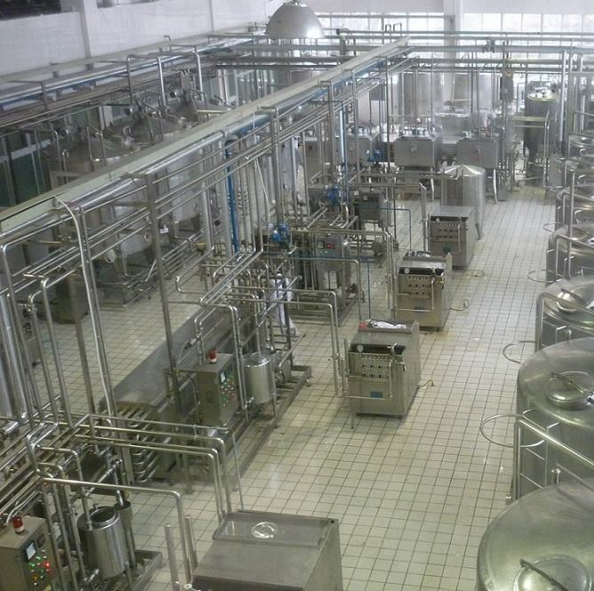
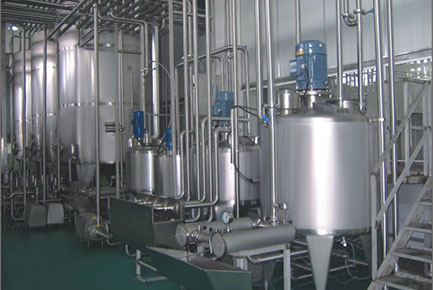
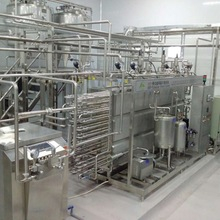

Мацзе
Мини-заводы по переработке цельного молока
Завод по производству коровьего молока без лактозыЗавод по производству коровьего молока с пищевыми волокнамиЗавод по производству молока-пребиотика без лактозы, c высоким содержанием кальция, магния, железа, кремния и микроэлементовЗавод по производству сухого молока и сливок из цельного молокаЗавод по производству гидролизата молочного белка

Коулун
Мини-заводы по производству Заменителей Цельного Молока (ЗЦМ) из растительного сырья
Технология позволяет производить ЗЦМ различной ценовой политики: социальный, средний, премиум класса и из различного сырья

Тайбэй
Мини-заводы для С/Х. Производство ЗЦМ для животных и гепато-протекторов

Кашгар
Мини-заводы по производству соков-сорбентов из овощей, фруктов или травы

Ханчжоу
Мини-заводы по производству сухих продуктов

Сиань
Мини-заводы по производству новых продуктов питания
Мы разработаем новые продукты и технологии под ваше сырье. Стоимость разработки – 150 тысяч рублей. Деньги возвращаются после заказа оборудования на расчетный счет или лично по договору маркетинга